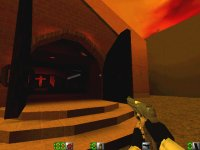
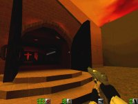
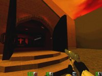

Map name: Church1
Map author: Harlequin
Map filename: church1.zip
Reviewed by: Jason Back [jasonback@usa.net]; Eric "{Gãté}" Bergman [ebergman@mii-inc.com]

Review:
Hello once again, {Gãté} here. This time I'd thought I'd take a look at everyone's favorite 'controversy' in the AQ2 world, church1. First of all, I'd just like to say that this review is actually a review, and not an editorial on someone's views, as was done before, but something does need to be taken a look at...
This map IS a church. So what. Big deal, that doesn't mean the author meant anything offensive by it at all - I find this level great fun. So what if it's a church; it's a welcome and fun environment... if you take games so seriously that every little thing offends you, then you should stick to pong. This level is no more offensive then any other, as long as you remember it's a game. Quake2 is only a game, nothing more, therefore shouldn't be taken so seriously. Now, on to the actual review....
The level design was done very nicely, and the author has done a nice job of recreating a life-like church. Kudos to the autor for this. The weapon balance is good, and a well-placed ppistol shot from the rafters can take out just about anyone. The level design helps in this area, as the maps lends itself well to stealth rather than mad akimbo fights.
The texture selection just makes the entire level feel more like an actual church. Kudos again to the author on this. The ammo placement is wonderful, and the only real camping spot is in the room with the closet that contains a grenade and an m4 clip... I've had some major room-controling battles there... not that that's a bad thing :-)
That's about the only complain, is that camping spot..... other than that, this map is clean-cut.
So, finally, in closing, this map (as a MAP, not as a 'symbol of evil' or something other, like everyone is trying to make it) is great fun with 3 - 6 people. So quit talking shit about it, and just play the thing... you'll find that it's an awsome map that desirves recognition. Thank you, I hope everyone out there reads this and wakes up.
-{Gãté}
-comments/complaints to ebergman@mii-inc.com